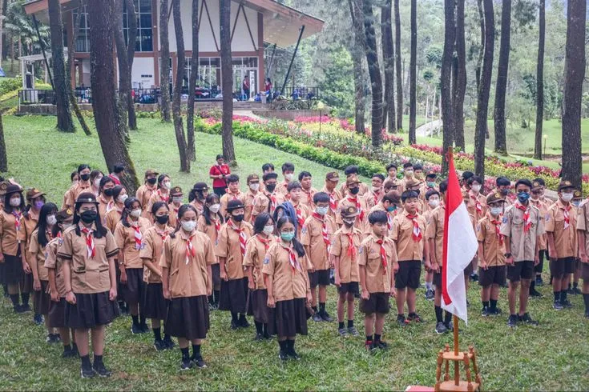
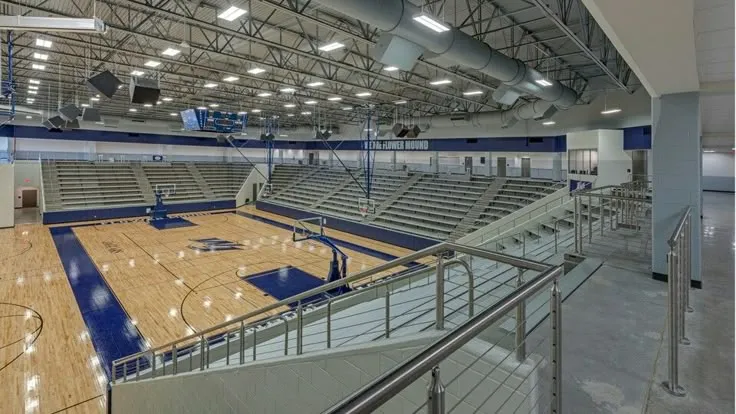
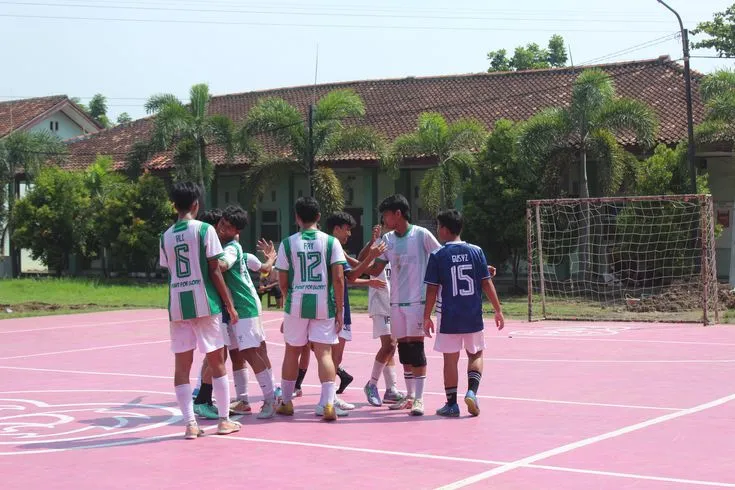

Momen keseruan, prestasi, dan aktivitas luar kelas siswa-siswi kami.


Setiap kegiatan dirancang untuk mengembangkan keberanian, kerja sama, kreativitas, dan tanggung jawab siswa.
Siswa dapat memilih kegiatan sesuai minat seperti pramuka, futsal, seni tari, klub bahasa Inggris, hingga eksperimen sains.
Kami rutin menghadirkan kegiatan khusus seperti peringatan hari besar, pekan literasi, festival seni, dan class meeting.
Field trip, kunjungan edukatif, dan pembelajaran berbasis pengalaman menjadi bagian penting untuk memperluas wawasan siswa.
Bukan hanya dokumentasi, tetapi gambaran nyata bagaimana siswa belajar aktif di luar kelas.

Ajang olahraga yang melatih sportivitas, strategi bermain, dan kekompakan tim sejak dini.

Siswa diberi ruang untuk mengekspresikan diri melalui karya visual, pertunjukan, dan kolaborasi kelas.

Aktivitas laboratorium dan eksperimen sederhana yang membuat sains terasa dekat, seru, dan mudah dipahami.
Pendaftaran untuk tahun ajaran baru telah dibuka. Kuota terbatas!
Hubungi Admin Sekarang